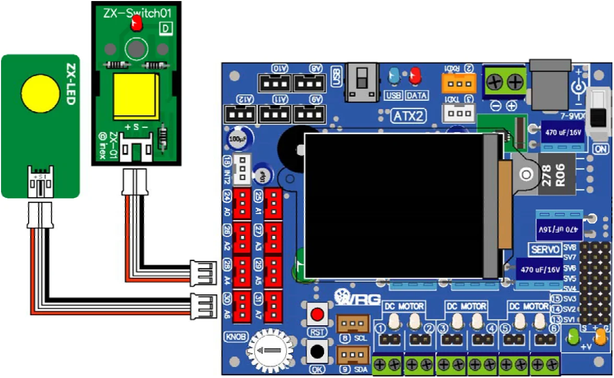

Activity 4 : Simple I/O Controller
The library file ipst.h provides in (x) function for getting the digital logic "0" or "1" from input port of microcontroller. It helps the ATX2 to get the logic from external input device such as a push-button switch.
In this activity, connect the ZX-LED board to the ATX2 board at any pin. Connect the ZX- SWITCH01 board that represent the digital input device to any pin of ATX2 board. Pressing and Releasing are used to control the LED on the ZX-LED board.
(A4.1) Connect the ZX-SWITCH01 board to pin 28 of ATX2 board and connect ZX-LED board to pin 30.

(A4.2) Create the new sketch with Listing A4-1 and save as ATX2_SimpleIO.ino file.
(A4.3) Compile and upload to the ATX2 board then run the sketch.
(A4.4) Observe the operation of switch and LED.
The ATX2 monitor shows the title message. Then press the OK button start. The screen shows message > Running..
Try to press the ZX-SWITCH01. The LED on ZX-LED boards will operate same pressing the switch. For example, no pressing LED is on because the logic is high. If pressed, LED is off because the logic is low.
#include <ATX2.h>
void setup()
{
OK(); // Wait for OK to Start
}
void loop()
{
if(in(28)==1) // Check status at pin 28
{
out(30,1); // If pin 28 is high, LED at pin 30 is on
}
else // If pin 28 is low, LED at pin 30 is off
{
out(30,0);
}
}Original manual, pages 112–113